Номограммы представлены в двух видах: I вид в координатах DUмакс/DUмин; а - для различных значений параметра k = bg и h (рис. 2, а - л обязательного приложения 3). По номограмме I вида следует определять степень неравномерности распределения защитного потенциала в зависимости от расстояния между анодами или их количества. II вид номограммы построен в координатах DUмин/bJ; а - для различных k = bg и h. По номограмме II вида следует определять абсолютное минимальное значение величины сдвига защитного потенциала в зависимости от заданных параметров: g, a, h, J, b.
Рис. 1. Расчетная схема катодной защиты плоской конструкции
DU - сдвиг защитного потенциала; 2а - расстояние между анодами; h - отстояние анодов от защищаемой поверхности, J - ток, стекающий с одного метра каждого анода
При расчетах следует соблюдать следующий порядок пользования номограммами.
Первоначально следует рассчитать параметр k = bg и выбрать соответствующую ему номограмму. Далее следует задать абсолютное значение минимального сдвига защитного потенциала.
Исходя из конструктивных и эксплуатационных соображений, необходимо задать количество анодов, расстояние между анодами (2а), либо отстояние анодов от поверхности защиты (h). По соответствующей кривой номограммы следует определить степень неравномерности поля DUмакс/DUмин и соотношение DUмин/bJ, откуда рассчитывается ток J.
Допустимо первоначально задать степень неравномерности поля защиты DUмакс/DUмин и один из параметров: J, либо h, либо 2а и согласно соответствующей кривой определять остальные параметры.
Примеры расчета катодной защиты затвора и сороудерживающих решеток плотины ГЭС приведены в справочном приложении 14 настоящих ВСН.
ПРИЛОЖЕНИЕ 4
Обязательное
РАСЧЕТ СОПРОТИВЛЕНИЯ РАСТЕКАНИЮ АНОДОВ
Сопротивление растеканию Rp для N вертикальных или горизонтальных анодов (труба или круглый стержень) конечной длины, расположенных параллельно плоскости защиты на расстоянии h, м, следует рассчитывать по формуле
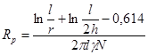
где l - длина анода, м;
r - радиус анода, м;
g - удельная электрическая проводимость среды, См/м.
Расстояние между анодами 2а > 5h.
Сопротивление растеканию Rр для N анодов, удаленных от плоскости защиты более чем на 5 радиусов анода, следует рассчитывать по формуле
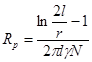
Расстояние между анодами 2а > 5h.
Сопротивление растеканию анодов произвольного сечения следует рассчитывать по формуле
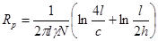
где с - периметр сечения анода, м;
l - длина анода, м;
h - расстояние от плоскости, проходящей через центр анода до защищаемой конструкции, м;
g - удельная электрическая проводимость среды, См/м.
Сопротивление растеканию полосовых анодов, установленных непосредственно на конструкции через изоляционный экран, следует рассчитывать по формуле
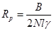
где В - коэффициент, зависящий от отношения ширины анода к ширине экрана.
|
Отношение ширины анода к ширине экрана |
1/2 |
2/3 |
3/4 |
4/5 |
5/6 |
6/7 |
8/9 |
9/10 |
|
В |
1,30 |
1,05 |
0,95 |
0,90 |
0,85 |
0,80 |
0,75 |
0,70 |
ПРИЛОЖЕНИЕ 5
Обязательное
РАСЧЕТ ЭЛЕКТРИЧЕСКИХ ПАРАМЕТРОВ ИСТОЧНИКОВ ПИТАНИЯ КАТОДНОЙ ЗАЩИТЫ
Следует рассчитать суммарный ток защиты Jзащ, А, напряжение на клеммах источника питания U, В, мощность Р, Вт.
Расчет суммарного тока защиты следует производить по формуле
Jзащ = J×l×N + Jу, (1)
где J, А/м - ток, стекающий с одного метра анода, определяемый согласно обязательному приложению 3;
l, м - длина одного анода;
N - количество анодов;
Jу, А - ток утечки на окружающие защищаемую поверхность бетонные конструкции.
Величину тока утечки следует оценивать согласно таблице. Для уменьшения токов утечки следует применять околоанодные изоляционные экраны (п. 3.8, 3.9 настоящих Норм).
Напряжение следует рассчитывать по формуле
U = Jзащ(Rр.сум + Rкат + Rв.цепи), (2)
где Rр.сум - суммарное сопротивление растеканию анодов;
Rкат = b/S - сопротивление растеканию катода, т.е. защищаемой поверхности, площадь которой равна S, м2;
Rв.цепи - сопротивление внешней цепи (подводящие кабели, контакты и т.п.).
Если расчет напряжения U показывает, что его величина превышает допустимые техникой безопасности пределы, необходимо уменьшить суммарное сопротивление либо за счет увеличения сечения подводящего кабеля, либо за счет уменьшения сопротивления растеканию Rр.сум путем увеличения количества анодов, либо увеличения их размеров или изменения конфигурации.
Мощность источника питания следует рассчитывать по формуле
Р = U×Jзащ, Вт. (3)
Оценка токов утечки на бетонные конструкции (в процентах к суммарному току защиты)
|
Месторасположение анодов и состояние поверхности защиты |
Отношение тока утечки к суммарному току, % |
|
Аноды расположены на расстоянии h < 0,5 м от защищаемой конструкции |
|
|
поверхность не окрашена |
0 - 5 |
|
поверхность окрашена |
5 - 10 |
|
Аноды вынесены за пределы конструкции (выносные аноды) на расстояние h > 0,5 м |
|
|
поверхность не окрашена |
5 - 10 |
|
поверхность окрашена |
10 - 50 |
|
Аноды расположены непосредственно на бетонной стенке (без экрана) |
|
|
поверхность не окрашена |
50 - 60 |
|
поверхность окрашена |
70 - 90 |
|
Аноды расположены непосредственно на бетонной стенке (с экраном) |
|
|
поверхность не окрашена |
10 - 15 |
|
поверхность окрашена |
15 - 20 |
|
Аноды расположены на внутренней поверхности трубопроводов состояние поверхности - любое |
0 |
ПРИЛОЖЕНИЕ 6
Обязательное
МЕТОДИКА РАСЧЕТА КАТОДНОЙ ЗАЩИТЫ ВНУТРЕННЕЙ ПОВЕРХНОСТИ ТРУБОПРОВОДОВ
Расчет следует вести по номограммам, построенным на основании расчета электрического поля, создаваемого гальванической системой: катод (внутренняя поверхность трубы) - аноды - система из N линейных анодов, протяженных вдоль трубы радиуса а, расположенных по периметру равномерно с интервалом 2j° = 2p/N (рис. 1 обязательного приложения 6).
Рис. 1. Расчетная схема катодной защиты внутренней поверхности трубопровода
а - радиус трубы; J - ток, стекающий с одного метра каждого анода; 2с1 - ширина анода; 2с2 - ширина экрана; 2j° - угловой интервал между анодами; N - количество анодов
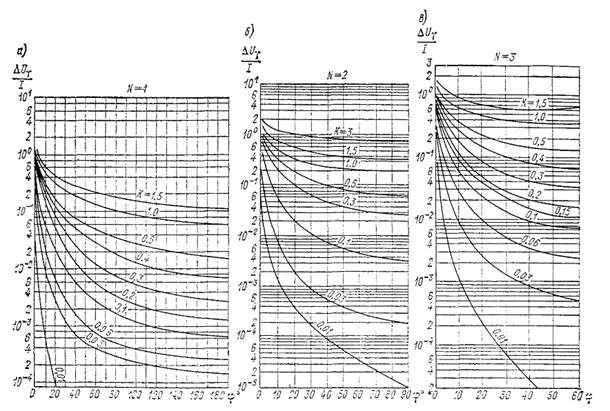
Рис. 2 (а - ж). Номограммы для расчета катодной защиты внутренней поверхности трубопроводов
Для расчета по номограммам требуется задание следующих исходных данных:
а) критерий защиты;
б) радиус (а) и длина (l) трубопровода;
в) удельная электрическая проводимость воды (g);
г) удельная катодная поляризуемость, определяемая согласно табл. 2 приложения 2.
д) количество анодов N.
Номограммы построены в координатах DUg/J, j° для N = 1, 2, 3, 4, 5, 6, 8 и параметра kтр = bg/a, изменяющегося в пределах kтр = 0,01 ¸ 3,0, и представлены на рис. 2, а, б, в, г, д, е, ж обязательного Приложения 6.
Порядок пользования номограммами
По заданному количеству анодов N следует выбрать соответствующую номограмму, а по величине kтр = bg/a - соответствующую кривую.
Далее следует задать степень защиты поверхности трубы и минимальный сдвиг защитного потенциала DUмин. При j° = p/N по ординате следует взять значение DUминg/J и из этого соотношения определить защитный ток, стекающий с одного метра анода, J А/м. По той же, кривой kтр = bg/a определяется максимальный сдвиг защитного потенциала из соотношения DUмаксg/J. Максимальный сдвиг защитного потенциала необходимо считать в точке с координатой b = С2×360/2pа, где b - угловой размер полуширины экрана.
Если значения DUмин и DUмакс укладываются в заданные пределы сдвига защитного потенциала, тогда взятое количество анодов достаточно для защиты. Если DUмакс значительно превышает допустимые значения, необходимо увеличить количество анодов на один или два и повторить расчет по номограмме с новым N.
Пример расчета катодной защиты внутренней поверхности трубопроводов приведен в справочном приложении 15 настоящих ВСН.
Если по конструктивно-эксплуатационным условиям возможна установка одного анода вдоль осевой линии трубы, расчет катодной защиты трубопровода следует вести по формуле
DU = DUмакс = DUмин = 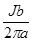
Расчет сопротивления растеканию анодов следует вести согласно обязательному приложению 4 настоящих ВСН.
Расчет электрических параметров источников питания катодной установки следует вести согласно обязательному приложению 5 настоящих ВСН.
ПРИЛОЖЕНИЕ 7
Справочное
Основные анодные материалы
|
Материал анодов |
Электрохимический эквивалент, Э, кг/А год |
|
Платинированный титан |
0,000006 |
|
Платино-танталловые и платино-ниобиевые сплавы |
0,00006 |
|
Свинец |
0,03 |
|
Сплав свинца с 1 % серебра и 6 % сурьмы |
0,04 - 0,08 |
|
Ферросилид |
0,1 - 0,8 |
|
Тройной ферросилидовый сплав: хром, кремний, железо |
0,2 |
|
Графит, графитопласты |
0,16 - 0,7 |
|
Алюминий |
3 |
|
Углеродистая сталь |
9 - 12 |
Электроды для анодных заземлений ТУ 48-20-97-77, Новочеркасский завод
|
Длина, мм |
1000 |
1450 |
2000 |
2500 |
2900 |
|
Масса, кг |
6,7 |
9,7 |
13,3 |
16,7 |
19,3 |
ПРИЛОЖЕНИЕ 8
Рекомендуемое
СХЕМЫ УСТАНОВКИ И СПОСОБЫ КРЕПЛЕНИЯ АНОДОВ
Рекомендуемые способы крепления анодов с экранами представлены на рис. 1 - 4.
На рис. 1 представлен анод с экраном - изолятор из листовой резины. Анод имеет небольшие габариты: допустимо использовать аноды такого типа для установки в напорные трубопроводы и пазовые конструкции. При этом необходима тщательная обмазка выступающих над анодом элементов крепления электроизолирующим составом (например, эпоксидной смолой). На рис. 2 представлен вариант анода с изолятором из деревянного бруса. Элементы крепления анода к изолятору электрически не связаны с катодом, что повышает надежность работы системы и не требует специальных мер по изоляции крепящих болтов от воды.
Аноды типа изображенных на рис. 1 и 2 допускается устанавливать на бетонные стенки при помощи анкерных болтов, заложенных в бетон на глубину 100 - 150 мм.
На рис. 3 представлен вариант установки цилиндрических анодов на бетонную стенку. Аналогично аноды могут быть закреплены на конструкции.
На рис. 3 представлены два варианта (а и б) упора, воспринимающего вес анода. Допускается подвеска анода на кронштейне аналогично варианту (б); в этом случае для передачи нагрузки к аноду приваривается опорное кольцо. На рис. 3 показана также зона экранирующей окраски бетона.
На рис. 4 представлена конструкция и вариант крепления к металлу или бетонной стенке анодов из малорастворимых ферросилидовых элементов.
Допускаются и другие способы установки анодов, отвечающие следующим основным требованиям:
а) надежная изоляция анода от конструкции;
б) отсутствие электрического контакта анода с элементами крепления его к изолятору или катоду.
Устройство катодной защиты, приведенное на рис. 5 - 12, изложено в основной части ВСН.
Рис. 1. Крепление анодов с использованием изолятора из листовой резины
1 - анод; 2 - экран-резина; 3 - шпилька крепления; 4 - втулка (изолятор); 5 - сварка анодных элементов; 6 - стенка трубопровода.
Рис. 2. Крепление анодов с использованием изолятора из дерева
1 - анод; 2 - изолятор; 3 - стенка трубопровода; 4 - стакан упорный; 5 - прокладка резиновая; 6 - втулка-изолятор; 7 - болт контактный; 8 - шайба; 9 - наконечник анодного кабеля; 10 - болт крепления
Рис. 3. Крепление анодов на кронштейнах
1 - анод; 2 - анкерный болт; 3 - проходной кронштейн; 4 - зона окраски бетона (экран); 5 - упорный кронштейн; 6 - концевой упор (изолятор); 7 - опорная пластина; 8 - анодный контакт; 9 - уголок 100´100 мм; 10 - изолятор; 11 - крепежные болты
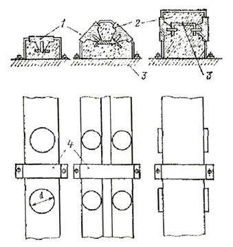
Рис. 4. Ферросилидовый анод
1 - анодный элемент из ферросилида диаметром 40 - 120 мм; 2 - каркас из полимербетона; 3 - токопроводящая шина; 4 - элементы крепления анода к конструкции
Рис. 5. Катодная защита сороудерживающей решетки с односторонней установкой анодов
Рис. 6. Катодная защита сороудерживающей решетки с двухсторонней установкой анодов
Рис. 7. Катодная защита сороудерживающих решеток водозабора «корзинчатого» типа
Рис. 8. Катодная защита затворов водосливной плотины
Рис. 9. Катодная защита турбинных затворов и затворов донных водосбросов
Рис. 10. Катодная защита внутренней поверхности трубопроводов. Электрическая схема автоматизированной установки
КС - катодные станции типа ПАСК; 1 - анодные линии; 2 - электроды сравнения; 3 - анодные вводы.
Рис. 11. Схема размещения анодов катодной защиты закладных частей бетонного паза
Рис. 12. Электрическая схема неавтоматизированной установки катодной защиты
ПРИЛОЖЕНИЕ 9
Рекомендуемое
ПРОЕКТИРОВАНИЕ МЕХАНИЧЕСКОГО ОБОРУДОВАНИЯ С УЧЕТОМ ТРЕБОВАНИЙ, ПРЕДЪЯВЛЯЕМЫХ К УСТРОЙСТВАМ КАТОДНОЙ ЗАЩИТЫ
Для реализации устройства выносных анодов следует предусмотреть специальную конструкцию, обеспечивающую вынос анода на 1 - 2 м (стрела, опорная балка и т.п.) и возможность его подъема при пропуске воды и льда.
Для увеличения эффективности защиты межригельных, ребристых поверхностей турбинных затворов и затворов донных водосбросов допускается сочетание катодной и ингибиторной защиты. Для этого при проектировании затворов следует предусмотреть обшивку и герметизацию металлическими листами межригельных просветов и отверстий на затворе. Образующиеся при этом внутренние объемы следует заполнить водным раствором ингибитора (например, 5 %-ным раствором нитрита натрия или 5 %-ным раствором силиката натрия) через специальные вентили. Образованные гладкие поверхности затвора с обеих сторон следует защищать установкой вертикальных или горизонтальных анодов, расположенных либо непосредственно на затворе, либо на бетонных стенках.
При проектировании катодной защиты турбинных затворов или затворов донного водосброса с установкой анодов на бетонной стенке следует предусмотреть специальные ниши в бетоне глубиной 0,5 - 1,0 м в зоне подвески затвора и возможность периодической ревизии и ремонта анодных систем. На поверхность ниши следует нанести экранирующее покрытие.
Для реализации оптимального варианта защиты закладных частей пазов, полностью облицованных металлом, анод следует устанавливать в центре паза. Для этого при разработке систем катодной защиты проектируемых ГЭС следует предусмотреть специальное углубление паза на 0,3 - 0,5 м против обычно принимаемой глубины. Установку анода следует производить на кронштейнах при возможно большем удалении от поверхности металла и таким образом, чтобы он не затруднял передвижение оборудования.
Для защиты анодов катодной защиты пазов от плавающих предметов рекомендуется надлежащим образом изменить конфигурацию паза.
ПРИЛОЖЕНИЕ 10
Обязательное
Источники тока установок катодной защиты
|
Тип катодной станции |
Рабочий ток |
Выпрямленное напряжение |
Регулировка тока |
Выходная мощность |
Напряжение питающей сети |
Точность поддержания защитного потенциала |
||
|
диапазон I |
диапазон II |
диапазон I |
диапазон II |
|||||
|
А |
А |
В |
В |
Вт |
В |
мВ |
||
|
КСС-150 |
12,5 |
6,25 |
12 |
24 |
Ручная ступенчатая |
150 |
220 |
- |
|
КСС-300 |
25,0 |
12,5 |
12 |
24 |
300 |
220 |
- |
|
|
КСС-600 |
50,0 |
25,0 |
12 |
24 |
600 |
220 |
- |
|
|
КСС-1200 |
100,0 |
50,0 |
12 |
24 |
1200 |
220 |
- |
|
|
СКСУ-150 |
6,25 |
3,125 |
24 |
48 |
То же |
150 |
220 |
- |
|
То же |
12,5 |
6,25 |
12 |
24 |
150 |
220 |
- |
|
|
СКСУ-300 |
12,5 |
6,25 |
24 |
48 |
300 |
220 |
- |
|
|
То же |
25,0 |
12,5 |
12 |
24 |
300 |
220 |
- |
|
|
СКСУ-600 |
25,0 |
12,5 |
24 |
48 |
600 |
220 |
- |
|
|
То же |
50,0 |
25,0 |
12 |
24 |
600 |
220 |
- |
|
|
СКСУ-1200 |
50,0 |
25,0 |
24 |
48 |
1200 |
220 |
- |
|
|
То же |
100,0 |
50,0 |
12 |
24 |
1200 |
220 |
- |
|
|
ПАСК-0,6 |
25,0 |
12,5 |
24 |
48 |
Автоматическая Ручная плавная |
600 |
220 |
50 |
|
ПАСК-1,2 |
50,0 |
25,0 |
24 |
48 |
1200 |
220 |
50 |
|
|
ПАСК-2,0 |
42,0 |
21,0 |
48 |
96 |
2000 |
220 |
50 |
|
|
ПАСК-3,0 |
62,5 |
31,25 |
48 |
96 |
3000 |
220 |
50 |
|
|
ПАСК-5,0 |
104,0 |
52,0 |
48 |
96 |
5000 |
220 |
50 |
|
|
СКСА-1200 |
50 |
25 |
24 |
48 |
Автоматическая |
1200 |
220 |
75 |
|
То же |
100 |
50 |
12 |
24 |
То же |
1200 |
220 |
75 |
|
СКСП-1200 |
50 |
25 |
24 |
48 |
То же |
1200 |
220 |
75 |
|
СКСП-1200 п 24/Д |
100 |
50 |
12 |
24 |
То же |
1200 |
220 |
75 |
|
ПАК-1-208/24 |
208 |
- |
24 |
- |
Автоматическая |
5000 |
220 |
50 |
|
ПАК-2-208/24 |
208 |
- |
24 |
- |
Ручная плавная |
5000 |
380 |
50 |
ПРИЛОЖЕНИЕ 11
Справочное
ТЕХНОЛОГИЯ ИЗГОТОВЛЕНИЯ ПОРИСТОГО ХЛОРСЕРЕБРЯНОГО ЭЛЕКТРОДА СРАВНЕНИЯ
Электрод (рис. 1) представляет собой цилиндр диаметром 10 мм и высотой 10 мм, спрессованный из смеси химически чистых порошков металлического и хлористого серебра.
Рис. 1. Электрод сравнения хлорсеребряный пористый
1 - пористый электрод; 2 - токоотвод
Рис. 2. Пресс-форма для изготовления электродов. Материал Ст40Х, термообработка, средний отпуск 45 - 50
1 - пуансон нижний; 2 - матрица; 3 - пуансон верхний
В верхней части цилиндра установлен токоотвод из серебряной проволоки диаметром 0,5 - 1,0 мм. Допускается изготовление токоотводов из серебряной проволоки, имеющейся в отработавших свой срок стеклянных электродах для рН-метрии.
Подготовка к изготовлению электрода
Подготовка к изготовлению электрода заключается в приготовлении реактивов, в получении порошка хлористого серебра, в подготовке оборудования для прессования и спекания электродов.
Для изготовления одного хлорсеребряного электрода требуется, г:
серебро металлическое, порошок..................... 2,40
серебро хлористое, порошок............................ 0,70
аммоний углекислый (х. ч.).............................. 0,55
Общая масса шихты........................................... 3,65
Применяемое оборудование:
а) химическая посуда (колбы, воронки, фарфоровые чашки и т.п.);
б) весы аналитические;
в) пресс-форма (изготовляется согласно рис. 2);
г) сушильный шкаф с пределами регулировки температуры + (50 ¸ 200) °С;
д) термопечь с пределами регулировки температуры до + 450 °С;
е) пресс с усилием до 2,0 т.
Подготовка шихты
Приготовление порошка хлористого серебра осуществляется осаждением разбавленного раствора азотнокислого серебра хлористым натрием. Для этого азотнокислое серебро растворяют в дистиллированной воде (30 - 50 г/л) и доливают 3 %-ный раствор хлористого натрия до полного осаждения хлористого серебра. Полученный осадок хлористого серебра тщательно промывается дистиллированной водой, отфильтровывается, высушивается в сушильном шкафу при температуре 100 - 110 °С и растирается в фарфоровой чашке до пылевидного состояния. Эти операции производятся в сосудах, защищенных от действия прямого солнечного света.
Шихта готовится тщательным перемешиванием порошков металлического серебра (2,4 г на один электрод), хлористого серебра (0,7 г на электрод) и углекислого аммония (0,55 г на электрод) в фарфоровой чашке. Допускается приготовление шихты в количестве, необходимом для изготовления требуемого числа электродов. Исходные порошки должны быть сухие. Не допускается наличие комков. При недостаточно тщательном перемешивании исходных материалов в теле электрода возможно образование раковин за счет комкования порообразующего наполнителя (углекислого аммония).
Токоотводы изготовляются из серебряной проволоки диаметром 0,5 - 1,0 мм (рис. 1). Для этого проволока нарезается на куски длиной 30 - 50 мм, на одном конце которых выгибается кольцо диаметром 3 - 5 мм.
Прессование электродов
Прессование пористых электродов производится в пресс-форме (рис. 2) при помощи пресса.
Прессовка производится в следующем порядке:
а) серебряный токоотвод вставляется в отверстие нижнего пуансона таким образом, чтобы кольцо его находилось примерно в центре электрода;
б) нижний пуансон вставляется в матрицу;
в) подготовленная шихта массой 3,65 г засыпается в матрицу;
г) в матрицу вставляется верхний пуансон;
д) пресс-форма помещается под пресс и производится прессование под давлением 100 - 150 МПа.
Спекание электродов
Спрессованные электроды помещаются в сушильный шкаф на подкладку из асбестового картона и нагреваются до температуры 55 - 60 °С с выдержкой в течение 30 - 40 мин. Эту операцию следует производить в вытяжном шкафу, так как при этом происходит обильное газовыделение за счет разложения порообразующего наполнителя (углекислого аммония). Повышение температуры выше 60 - 70 °С недопустимо, так как при этом наполнитель начинает разлагаться очень быстро, и выделяющиеся газы могут разрушить электрод.
После прекращения выделения газов электроды осторожно помещаются в термопечь, температура которой постепенно повышается до 380 - 400 °С, и ведется спекание электродов в течение 4 ч. Контроль температуры производится при помощи термопары (например, платино-платинородиевой).
Следует строго соблюдать режим спекания, так как занижение температуры или продолжительности спекания приводит к потере механической прочности пористых электродов. Завышение температуры спекания выше 450 °С тоже недопустимо, так как при этом хлористое серебро плавится и поры электрода закрываются, что приводит к ухудшению его электрохимических характеристик.
Рис. 3. Зависимость собственного потенциала пористого хлорсеребряного электрода от содержания ионов хлора в воде
После спекания электроды охлаждаются на воздухе до комнатной температуры.
Для удобства эксплуатации электроды устанавливаются в корпус из изоляционного материала. Место пайки токоотвода с изолированным проводом заливается эпоксидной смолой. При установке электродов на конструкции необходимо принять меры по предотвращению загрязнения рабочей поверхности электрода (маслами, красками и т.п.). При загрязнении электрод следует очистить погружением в растворитель (ацетон, толуол и пр.).
Электроды допускают долговременное хранение на воздухе или в пресной воде. Непосредственно перед началом измерений электрод для стабилизации потенциала следует выдержать в течение 24 ч в среде, в которой будет производиться измерение.
Потенциалы изготовленных электродов должны быть оттарированы относительно выпускаемых серийно для рН-метрии хлорсеребряных электродов сравнения типа ЭВЛ (ТУ 25-07-591-69).
Собственный потенциал пористого хлорсеребряного электрода в зависимости от содержания ионов хлора в воде может быть определен согласно графику рис. 3. Примеры установки электродов на конструкции показаны на рис. 4.
Рис. 4. Установка пористого хлорсеребряного электрода на конструкции
а - с безнапорной стороны; б - на напорной поверхности; 1 - защищаемая конструкция; 2 - пористый электрод; 3 - заливка эпоксидной смолой; 4 - стакан (сталь); 5 - крышка (сталь); 6 - резиновая герметизирующая прокладка; 7 - корпус электрода (оргстекло, эбонит, и пр.); 8 - шайба; 9 - трубка (сталь, медь и пр.); 10 - изолированный провод; 11 - крепящая шпилька
ПРИЛОЖЕНИЕ 12
Справочное
ТЕХНОЛОГИЯ ИЗГОТОВЛЕНИЯ НАСЫЩЕННОГО МЕДНОСУЛЬФАТНОГО ЭЛЕКТРОДА СРАВНЕНИЯ
Медносульфатный электрод (рис. 1) состоит из корпуса (3), изготовленного из оргстекла или иного электроизолирующего материала, внутри которого расположен медный стержень (5) (может быть также использована трубка или спираль из проволоки). Внутреннее пространство корпуса заполняется пастой (4) из кристаллов медного купороса и дистиллированной воды. Отверстие корпуса закрыто пробкой (1), изготовленной из пористой древесины (осина, береза и т.п.). Пробку предварительно пропитывают медным купоросом путем кипячения в насыщенном растворе в течение 1 - 2 ч. К медному стержню подсоединяется контактный провод (8). Место соединения предохраняется от действия воды при помощи кожуха (6) и эпоксидной смолы (7). Следует иметь в виду, что потенциал электрода стабилен до тех пор, пока в электроде сохраняются кристаллы медного купороса. С течением времени при работе электрода в воде кристаллы растворяются вследствие диффузии ионов через пористую пробку. По мере их расходования электрод необходимо заполнять свежеприготовленной пастой. В периоды между проведением измерений электрод следует хранить в стакане, заполненном насыщенным раствором медного купороса. Обычно используют медно-сульфатные электроды диаметром 30 - 90 мм, высотой 100 - 190 мм. Собственный потенциал насыщенного медно-сульфатного электрода относительно НВЭ составляет + 0,316 В.
Наибольшее распространение имеют следующие типы медно-сульфатных электродов: ЭН-1, МЭП-1-АКХ, МЭП-2-АКХ, МЭП-3-АКХ, МЭП-4-АКХ, НИ-СЭ-58.
Рис. 1. Подвесной медно-сульфатный электрод сравнения
1 - пористая пробка; 2 - крышка (изолятор); 3 - корпус (изолятор); 4 - паста из медного купороса; 5 - медный стержень; 6 - кожух (изолятор); 7 - заливка эпоксидной смолой; 8 - контактный изолированный провод
ПРИЛОЖЕНИЕ 13
Рекомендуемое
Формуляр записи регулировок параметров катодной защиты и результатов измерений потенциала конструкции
|
Наименование установки катодной защиты и схемы расположения точек, измерение потенциала |
Дата |
Ток защиты (А) |
Напряжение на клеммах источника тока (В) |
Потенциал в точках измерения (мВ) |
Примечания |
||||||
|
1 |
2 |
3 |
4 |
5 |
6 |
7 |
|||||
Примечания к заполнению формуляра:
1. При регулировке параметров защиты производится запись данных до и после регулировки, а в графе «Примечания» делаются отметки об изменении параметров защиты.
2. Целесообразно дополнять формуляр графиками кривых распределения потенциала, выполненных на миллиметровой бумаге. Точки на графиках соединяются плавными линиями.
ПРИЛОЖЕНИЕ 14
Справочное
ПРИМЕРЫ РАСЧЕТА КАТОДНОЙ ЗАЩИТЫ ПЛОСКИХ МЕТАЛЛОКОНСТРУКЦИЙ
Пример 1. Задан плоский затвор шириной 11 м и высотой смоченной части 9 м, ранее окрашенный по полной схеме и эксплуатируемый в воде с очень низкой удельной электрической проводимостью (g = 0,005 См/м), не содержащей достаточного количества ионов кальция и магния для образования солевых катодных отложений (например, условия Зейской ГЭС). Стационарный потенциал окрашенной стали в этих условиях эксплуатации Uс = - 0,4 В.
Требуется найти количество анодов, их расположение, защитные токи, мощность катодных установок, чтобы обеспечить на поверхности затвора распределение сдвига защитного потенциала от DUмин = 0,1 В до DU макс = 0,8 В, что обеспечит сохранность лакокрасочных покрытий. Таким образом, задана степень неравномерности поля DUмакс/DUмин = 0,8/0,1 = 8. За удельную поляризуемость поверхности затвора в основной период эксплуатации принимается величина bкр = 20 Ом×м2. Параметр k = bg = 20×0,005 = 0,1. Выбираем соответствующую номограмму, рис. 2, б обязательного приложения 3.
По верхней части номограммы определяем, что заданная равномерность распределения потенциала может быть обеспечена при различных вариантах расположения анодов.
Так, например, можно выбрать отстояние системы анодов от плоскости защиты h = 10 см, тогда придется располагать аноды через каждый метр, т.е. на защиту потребуется 10 анодов. Можно выбрать отстояние анодной системы h = l м или более. Тогда защита обеспечивается всего одним анодом. Здесь для выбора оптимального варианта вступают в силу конструктивные и эксплуатационные соображения. Допустим, что в рассматриваемом случае особенности конструкции и эксплуатации затворов не позволяют отнести аноды более чем на расстояние h = 0,25 м. Тогда согласно верхней части номограммы при h = 0,25 м и DUмакс/DUмин = 8, a = 1,25 м, т.е. расстояние между анодами для создания защиты должно быть 2а = 2,5 м. Таким образом, с учетом ширины затвора для защиты потребуется 4 вертикальных анода, установленных на расстоянии 2,5 м друг от друга. Далее рассчитаем необходимый защитный ток. Согласно нижней части номограммы при h = 0,25 м и а = 1,25 м и DUмин/bJ = 0,07. Тогда защитный ток, стекающий с одного метра анода:
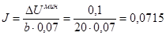
Учитывая
длину анодов, равную l = 9
м, определяем суммарный ток защиты на один затвор Jзащ = JlN = 0,0715×9×4 = 2,6 А. Ток утечки равен нулю. Зададим срок службы анодов до
полного срабатывания равным t = 25
годам. Необходимая масса одного метра анода из стали определяется по формуле т
= ЭJt, т.е. m =
10×0,0715×25 =
18 кг. Сечение анода определяется по формуле d = 12,8Jt = 12,8×0,0715×25 = 23 см2, отсюда радиус цилиндрического анода
(стержня) 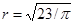
Расчет сопротивления растеканию анода ведется по формуле (1) обязательного приложения 4:
;
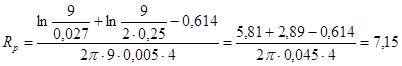
Сопротивление растеканию катода Rкат = b/S, где S = 100 м2 - площадь поверхности затвора Rкат = 20:100 = 0,2 Ом.
Сопротивление питающих кабелей Rв цепи принимаем равным 0,1 Ом. Тогда Rсум = 7,15 + 0,2 + 0,1 = 7,45 Ом.
Падение напряжения в цепи анод - катод Uкс = Jзащ×Rсум = 2,6×7,45 » 20 В. Мощность, необходимая для катодной защиты одного затвора
Р = Jзащ×Uкс = 2,6×20 = 52 Вт.
Пример 2. Пусть задан тот же затвор, окрашенный по полной схеме и эксплуатируемый в воде средней минерализации С = 300 мг/л (Днепр, Волга). Вода такой минерализации имеет удельную электрическую проводимость, равную g = 0,03 См/м. Таким образом, по сравнению с примером 1 изменился всего один эксплуатационный параметр. Рассмотрим влияние этого изменения на параметры защиты.
Аналогично примеру 1 заданная неравномерность распределения сдвига защитного потенциала DUмакс/DUмин = 0,8/0,1 = 8; b = 20 Ом×м2. Параметр k = bg = 20×0,03 = 0,6. Пусть так же, как в примере 1, по конструктивным условиям анодную систему нельзя отнести от защищаемой поверхности более чем на h = 0,25 м. Тогда, как это следует из номограммы рис. 2, в, для защиты затвора шириной 10 м и высотой 9 м можно выбрать два анода, установленных горизонтально. Защитный ток определяется по нижней номограмме. При h = 0,25 м и а = 2,25 м и DUмин/bJ = 0,04, отсюда
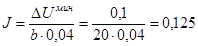
Суммарный
защитный ток Jзащ =
0,125×9,5×2 =
2,4 А. Если задать срок службы анода до полного срабатывания равным 25 годам,
тогда потребуется анод сечением d = 12,8Jt = 12,8×25×0,125 » 40 см2, радиус стержня 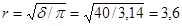
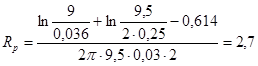
Учитывая сохранение механической прочности анода, реальный срок его службы следует принять равным 10 - 12 годам. Суммарное сопротивление системы анод - катод Rсум = 2,7 + 0,2 + 0,1 = 3 Ом. Падение напряжения в цепи анод - катод Uкc = Jзащ×Rсум = 2,4×3 = 7,2 В. Мощность, необходимая для катодной защиты затвора Р = Uкс×Jзащ = 7,2×2,4 = 17 Вт.
Пример 3. Расчет катодной защиты сороудерживающей решетки (напорная сторона). Решетка шириной 12 м и высотой 24 м окрашена по полной схеме. Общая площадь стержней решетки 600 м2, площадь просвета 300 м2.
Для катодной защиты решетки с напорной стороны предлагается система из трех вертикальных анодов, расположенных вдоль вертикальных ригелей на расстоянии 3,8 м друг от друга и отстоянии анодов от плоскости решетки h = 0,4 м.
Величина удельной поляризуемости поверхности решетки bреш = 20 Ом×м2. Однако, учитывая дополнительную неравномерность распределения защитной плотности тока по поверхности решетки за счет отличия ее конфигурации от плоскости при расчете катодной защиты решетки, берем b = bреш/n, где n = 600:300 = 2. Тогда расчетное b = 20:2 = 10 Ом×м2. Параметр k = bg = 10×0,005 = 0,05. Катодная защита рассчитывается по номограмме рис. 2, а. Для а = 1,9 м, h = 0,4 м коэффициент неравномерности равен 8. При минимальном сдвиге защитного потенциала DUмин = 0,1 В, DUмакс = 0,8 В.
Таким образом, в этом случае обеспечивается сохранность лакокрасочного покрытия, так как Uмакс = DUмакс + Uс = 0,8 + 0,4 = 1,2 В. Защитный ток с одного метра анода определяется по нижней номограмме. При а = 1,9 м и h = 0,4, DUмин/bJ = 0,055; отсюда J = DUмин/0,055×b = 0,1:0,055´10 = 0,18 А/м. Суммарный защитный ток Jзащ = 0,18×24×3 = 13,0 А.
С учетом допустимых гидравлических потерь на обтекание в качестве анодов выбираются стальные трубы диаметром 200 мм с толщиной стенки 10 мм.
Расчет сопротивления растеканию анодов ведется по формуле (1) обязательного приложения 4, где l - длина анода, равная 24 м; r - радиус анода, равный 0,1 м; h = 0,4 м; g = 0,005 См/м. Тогда
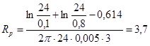
Сопротивление растеканию решетки Rкат = b/S = 100:600 = 0,017 Ом.
Сопротивление питающих кабелей сечением 35 мм2 и длиной 100 м Rв цепи = 0,05 Ом. Таким образом, общее сопротивление в цепи анод - катод Rсум = 3,7 + 0,017 + 0,05 = 3,77 Ом.
Напряжение в цепи питания одной решетки Uкc = Jзащ×Rсум = 13×3,77 » 49 В, мощность катодной защиты одной решетки Р = 49×13 = 640 Вт.
При заданных размерах анодов и необходимых токах защиты полное срабатывание анодов будет происходить за 27 лет (масса одного метра анода m = p(0,12 - 0,092)×7800 = 3,14×0,002×7800 = 49 кг; отсюда t = т/ЭJ = 49:10×0,18 = 27 лет.
ПРИЛОЖЕНИЕ 15
Справочное
ПРИМЕР РАСЧЕТА КАТОДНОЙ ЗАЩИТЫ ВНУТРЕННЕЙ ПОВЕРХНОСТИ ТРУБОПРОВОДОВ
Задан трубопровод диаметром 4,44 м и длиной 50 м. Внутренняя поверхность трубопровода не окрашена; сохранилась заводская грунтовка и имеются следы ржавчины. По трубопроводу протекает вода средней минерализации (С = 350 мг/л). На стенках трубы возможно образование солевых катодных отложений. Стационарный потенциал стали в заданных условиях эксплуатации Uс = - 0,3 В; удельная поляризуемость стенок трубы в основной период эксплуатации b = 10 Ом×м2.
Следует найти количество и расположение анодов, защитный ток для обеспечения защиты трубопровода при минимальном сдвиге потенциала не менее 0,05 В и при максимальном сдвиге потенциала вблизи анода не более 2,2 В. Таким образом, заданная степень неравномерности сдвига защитного потенциала DUмакс/DUмин = 2,2/0,05 = 44.
Для
расчета выберем случай минимального количества анодов, т.е. N = 1 и
посмотрим, удовлетворяет ли защита с помощью одного анода поставленной задаче.
При расчете необходимо учесть, что полосовой анод шириной 2с1
= 120 мм и изолятор, на который он крепится к трубе, имеют конечную
ширину. Выберем ширину изолятора равной 2с2 = 160 мм.
Тогда расчет максимального сдвига потенциала нужно вести в точке с координатой
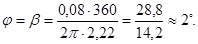
Параметр
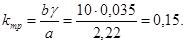
Таким образом, степень неравномерности распределения сдвига защитного потенциала DUмакс/DUмин = 0,4/0,001 = 400, что не удовлетворяет заданным условиям степени неравномерности распределения защитного потенциала.
Тогда для расчета выберем N = 3. При kтр = 0,15, j = 2° DUмаксg/J = 0,40; при j = 60° DUминg/J = 0,012, т.е. DUмакс/DUмин = 0,40/0,012 = 33. Расчет параметров защиты, таким образом, ведем для N = 3 (номограмма рис. 2, в).
Из условия DUминg/J = 0,012 определяем ток, стекающий с одного метра каждого анода J = DUминg/0,012 = 0,05´0,035/0,012 = 0,145 А/м.
Суммарный
ток защиты Jзащ = 0,145×50×3 =
22 А.
= 0,145×50×3 =
22 А.
Задаем срок службы анодов до полного срабатывания t = 20 лет. Тогда сечение анодов d = 12,8Jt = 12,8×0,145×20 = 37 см2, т.е. для полосового анода шириной 120 мм его толщина должна быть равна 31 мм. Сопротивление растеканию Rр определяем по формуле (4) обязательного приложения 4:
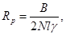
Здесь отношение ширины анода к ширине экрана равно 120/160 = 3/4, тогда согласно приложению 4 коэффициент В = 0,95, а
Ом.
Сопротивление растеканию катода Ом. Сопротивление подводящих кабелей не более 0,05 Ом, Rсумм = 0,09 + 0,014 + 0,05 = 0,154 Ом. Напряжение на клеммах катодной станции Uкс = 22×0,154 = 3,4 В; мощность катодной защиты Р = 3,4×22 = 75 Вт.
СОДЕРЖАНИЕ